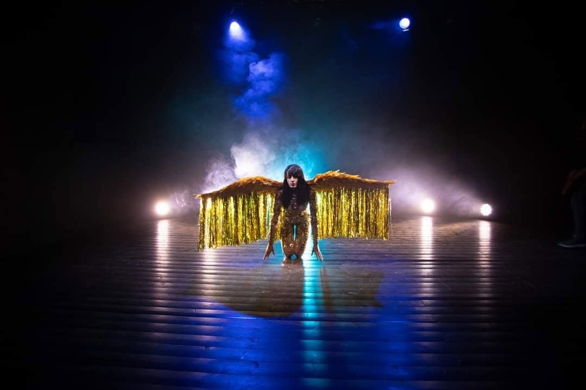
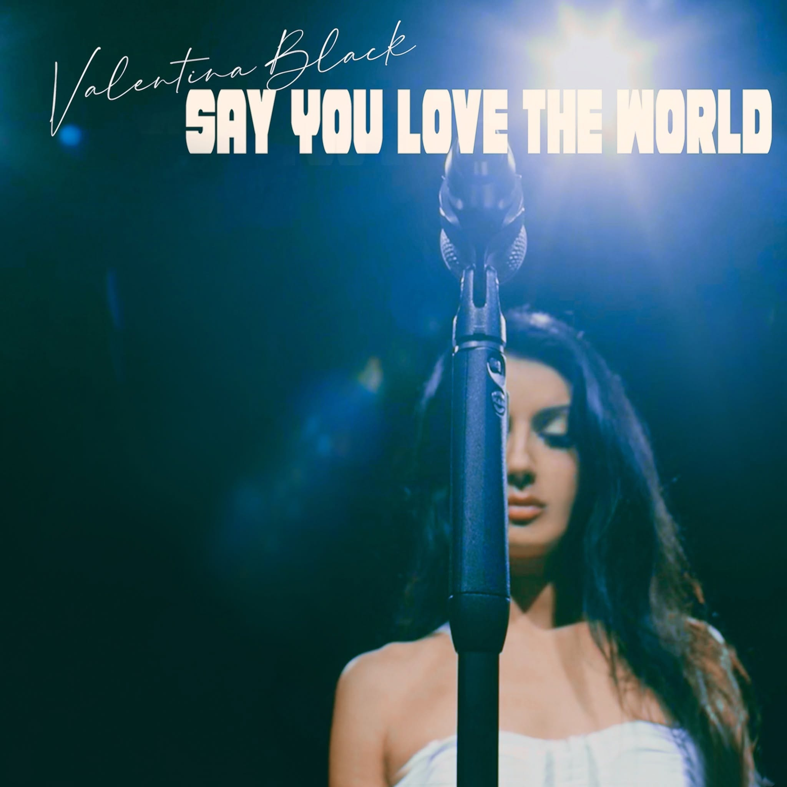

Every music video carries its own making-of story, but few take as sharp a turn as the one behind "Say You Love the World." What began as a shoot in London ended, weeks later, on an entirely different set — in Verona, Italy — with a new director, a new plan, and, in the end, the video fans know today.
A False Start in London
The first attempt to bring "Say You Love the World" to the screen took place in London, where the original concept for the video was developed and filmed. But the shoot ran into trouble on set: a technical error by the crew member operating the smoke machine compromised the footage, introducing a graphics problem that undermined the visual effect the scene depended on. Rather than try to patch together material that no longer matched her vision for the song, Valentina made the call to start again from zero.
Starting Over in Verona
The reshoot took her to Verona, Italy, where she rebuilt the video from the ground up alongside director Alessandro Guerra. This time, the concept was drawn directly from the message at the heart of the song itself.
"Say You Love the World" is, at its core, a plea — a call to notice the quiet neglect the world so often receives from those who claim to love it. In Verona, that idea took visual shape: Valentina Black moving through the city's streets and timeworn corners, an intimate presence set against centuries-old stone, as if in search of something the song itself keeps asking after. The video leans on restraint rather than spectacle, letting the refrain — "say you love the world" — carry the emotional weight, while the imagery works quietly underneath it. It plays less like a narrative than a mood: contemplative and unresolved, true to the improvised, unplanned way the song itself first came into being.


Watch: On the Set in London
Raw behind-the-scenes footage from the original London shoot — the takes affected by the smoke-machine issue described above, before Valentina decided to start over in Verona.
Released to the World
The finished video was released on Valentina Black's official YouTube channel and on VEVO, where it remains today.